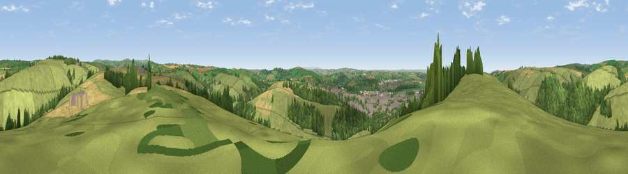

Viewpoint near Barnstaple
#12546 in England · top 27% of its area beats it · near BarnstapleThe view, rendered

A 360° render of this exact spot computed from the terrain model, tree cover and land cover — summer colours, afternoon light, calibrated against photographs of famous viewpoints. Real trees, hedges and buildings will differ in detail.
The panorama
Grey silhouette: terrain skyline in each direction (720 bearings, Earth curvature and refraction included). Dashed green: skyline with trees (+15 m) and buildings (+8 m) as obstacles. Blue strip: how far the ground is visible on each bearing.
Where the view opens
Wedge length = distance to the farthest visible ground on that bearing (vegetation-aware). Rings at 10, 25 and 50 km.
What fills the view
62% grassland · 21% woodland · 10% cropland · 6% built-up · 1% water
Angular shares of the visible panorama (visual magnitude), not map area. Landscape diversity 0.47 (0–1 Shannon).
Key numbers
More beautiful places nearby
The staircase of upgrades: each row has a higher view potential than everything closer. Driving times are estimates from straight-line distance, calibrated against real road routing — check an actual route before setting out.
| Place | Direction | Drive | Score |
|---|---|---|---|
| Viewpoint near Shirwell | NNE · 1 km | ~3 min | 60.8 |
| Viewpoint near Barnstaple | SSE · 2 km | ~4 min | 60.9 |
| Viewpoint near Kings Heanton | WNW · 3 km | ~7 min | 71.1 |
| Viewpoint near Muddiford | NNW · 5 km | ~11 min | 71.5 |
| Viewpoint near Bishop's Tawton | S · 6 km | ~12 min | 73.8 |
| Codden Hill | S · 6 km | ~12 min | 81.3 |
| Viewpoint near Berrynarbor | N · 12 km | ~22 min | 81.8 |
| Viewpoint near Croyde | WNW · 13 km | ~24 min | 83.7 |
51.09764, -4.03826 · source: screening · position refined by local search. Computed location — check access rights before visiting.